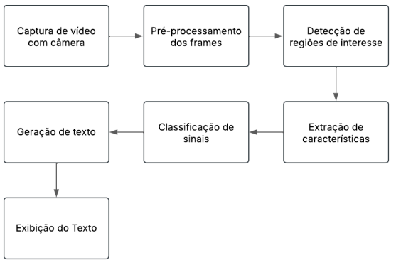

Integrantes
- Leonardo Severgnine Maioli – 11201920579
- Ricardo Javurek Rihan – 11201920897
- Tiago Luiz Silva de Araújo Pereira – 11013316
Tema do Trabalho
Sistema tradutor de Libras para texto utilizando técnicas de Visão Computacional - Aplicação em contextos clínicos e hospitalares.
O projeto visa o desenvolvimento de um protótipo baseado em técnicas de Visão Computacional para traduzir sinais de Libras em tempo real para texto em português. O sistema terá como foco a utilização em clínicas e hospitais, sendo capaz de reconhecer sinais usados em triagem de pronto-socorro ou em consultas clínicas básicas como sintomas, dores, respostas simples como "sim", "não", "febre", "dor de cabeça", entre outras. Dessa maneira, o sistema será especialmente útil em contextos hospitalares e clínicos, permitindo que pacientes surdos consigam se comunicar com profissionais da saúde de forma mais eficiente. A solução capturará vídeos de sinais, processará os frames, identificará os gestos e os traduzirá em palavras e frases compreensíveis.
Contexto e Cenário de Aplicação (CA) 📄
Contexto do Problema
A Língua Brasileira de Sinais (Libras) é a principal forma de comunicação de milhares de pessoas surdas no Brasil. Trata-se de uma língua visual-motora com estrutura gramatical própria, e não é universal, com cada país possuindo sua própria língua de sinais. Apesar de ter sido reconhecida oficialmente no Brasil como meio legal de comunicação em 2002 (Lei nº 10.436/2002), a falta de profissionais intérpretes de Libras e a baixa inclusão digital para a comunidade surda ainda são barreiras significativas. Em muitos serviços públicos, empresas e até mesmo em ambientes educacionais, a comunicação entre surdos e ouvintes é limitada pela ausência de tradutores humanos.
Escolha do Tema e Justificativa
Durante a etapa de entrevistas empáticas deste trabalho, os membros do grupo entrevistaram pessoas buscando entender com empatia os problemas que existiam em seus cotidianos, ou de pessoas conhecidas, em que a solução poderia envolver o uso de recursos como câmeras, imagens, vídeos, smartphones e as técnicas de visão computacional. Nesta etapa, diversos problemas nesse contexto foram levantados e podem ser melhor entendidos nos relatos de entrevistas entregues na etapa anterior.
A partir dos problemas levantados pelos entrevistados, a equipe optou por trabalhar com o problema da dificuldade de comunicação entre surdos e ouvintes, devido à sua relevância social e ao impacto direto na inclusão de pessoas surdas em diferentes contextos, como saúde, educação e atendimento ao público. Além disso, uma análise de mercado mostrou que existem alguns aplicativos voltados para a tradução de texto, voz ou vídeo para Libras, como o Hand Talk e o VLibras, que utilizam avatares virtuais para apresentar os sinais de Libras a partir de um conteúdo em português. No entanto, essas soluções atuam apenas na direção Português → Libras, não sendo capazes de realizar a tradução inversa, ou seja, de Libras (captada por câmera) para texto em português.
Continuando com a pesquisa, a equipe encontrou artigos científicos que também apontam a existência de alguns trabalhos voltados para a tradução de Libras para texto, como o realizado por Nath et al. (2017), que propôs um modelo utilizando técnicas de processamento de imagem, como o algoritmo de Casca Convexo (Convex Hull Algorithm) e o algoritmo de Correspondência de Modelos (Template Matching Algorithm), para realizar o reconhecimento de linguagem de sinais. Também foi encontrado o trabalho de Papatsimouli et al. (2023), que realizou uma revisão sistemática dos avanços recentes em sistemas de tradução de linguagem de sinais em tempo real, com foco especial na integração dessas tecnologias com a Internet das Coisas (IoT).
Apesar desses avanços iniciais, muitos desses estudos estão em fase experimental, com vocabulário limitado e foco em ambientes controlados de laboratório. Dessa forma, fica claro que ainda existe uma lacuna significativa na oferta de soluções práticas e acessíveis para o público geral que possibilitem a tradução automática de Libras para texto, especialmente em cenários reais com variabilidade de iluminação, fundo, ângulo de câmera e velocidade dos sinais. Com base nisso, a equipe propõe o desenvolvimento de um sistema de tradução de Libras para texto com foco em contextos clínicos e hospitalares, visando atender a uma demanda identificada nas entrevistas e que possa trazer bons resultados futuros para essa área.
Sistema de Tradução
O objetivo principal do projeto é desenvolver um protótipo funcional de um sistema de tradução automática de Libras para texto escrito em português, utilizando técnicas de Visão Computacional e Processamento de Vídeo. Além disso, o sistema terá um foco específico para utilização em clínicas e hospitais, ou seja, será capaz de reconhecer sinais específicos usados em triagem de pronto-socorro ou em consultas clínicas básicas como sintomas, dores, respostas simples como "sim", "não", "febre", "dor de cabeça", entre outras.
Espera-se que o resultado final para o usuário seja uma aplicação capaz de capturar, por meio de uma webcam ou câmera de celular, o vídeo de uma pessoa realizando sinais em Libras. O sistema será responsável por processar os frames desse vídeo, reconhecer os gestos feitos pelas mãos e braços e exibir em uma tela a tradução correspondente em forma de texto.
Utilização do Sistema
O sistema será projetado para possuir uma interface simples e amigável aos usuários, sejam eles pessoas surdas ou ouvintes. O processo de utilização do sistema ocorrerá nas seguintes etapas:
- Para um início de comunicação entre um ouvinte e uma pessoa surda, a câmera conectada a uma tela (celular ou notebook) deverá ser posicionada de frente para essa última, enquanto a tela fica com a outra pessoa.
- Ao ligar o sistema, ele começará a capturar o vídeo em tempo real do surdo se comunicando em Libras.
- A aplicação irá reconhecer os sinais de Libras feitos pela pessoa.
- Após o processamento, o sistema exibirá na tela o texto traduzido para o português.
- O usuário ouvinte poderá ler esse texto e então entender a mensagem transmitida pela pessoa surda.
Benefício do Sistema
O principal benefício do sistema de tradução será a promoção da inclusão comunicacional em contextos de atendimento em saúde, reduzindo barreiras linguísticas entre profissionais da saúde e pessoas surdas.
Com a utilização do sistema, médicos, enfermeiros, atendentes de recepção e outros profissionais poderão compreender de forma rápida e eficiente o que o paciente surdo está comunicando em Libras, mesmo sem possuir conhecimento prévio da língua de sinais. A aplicação prática deste sistema será especialmente útil em momentos de triagem, consultas clínicas básicas e atendimentos de emergência, nos quais a comunicação precisa ser objetiva, rápida e clara.
Além de facilitar o atendimento e garantir maior segurança ao paciente surdo, o sistema também poderá servir como base para futuras pesquisas na área de tradução automática de línguas de sinais, ampliando o vocabulário reconhecido, melhorando a precisão dos algoritmos e contribuindo para o avanço da acessibilidade digital no Brasil.
Modelagem Funcional do Sistema (MF) 📄
Este documento traz uma breve visão geral sobre o cenário de aplicação escolhido pelo grupo para o sistema de tradução de Libras para texto. Na sequência, é apresentado um diagrama de blocos seguido da descrição de cada parte do mesmo, com o objetivo de apresentar as etapas do funcionamento do sistema, seu fluxo de dados e o detalhamento das informações de entrada, de saída e do processamento realizado em cada bloco.
Visão Geral do Sistema
O sistema a ser desenvolvido pela equipe será um protótipo que utilizará técnicas de Visão Computacional e Processamento de Vídeo para traduzir sinais específicos de Libras para texto escrito em português. Além disso, o sistema terá como foco a utilização em clínicas e hospitais, sendo capaz de reconhecer sinais usados em triagem de pronto-socorro ou em consultas clínicas básicas como sintomas, dores, respostas simples como "sim", "não", "febre", "dor de cabeça", entre outras.
O sistema será composto por alguns módulos que atuam de forma sequencial. A entrada principal será um vídeo capturado em tempo real de uma pessoa sinalizando em Libras. O processamento envolverá a captura desse vídeo, pré-processamento de frames, extração de características, classificação dos sinais e, por fim, a exibição do texto traduzido.
Diagrama de Blocos
Descrição dos Blocos do Sistema
| Bloco | Entrada | Processamento | Saída |
|---|---|---|---|
| Captura de vídeo com câmera | Vídeo em tempo real | Captura contínua de frames | Sequência de frames |
| Pré-processamento dos frames | Frames | Remoção de ruído, filtros, ajuste de contraste | Imagens tratadas |
| Detecção de regiões de interesse | Imagem tratada | Segmentação para isolar mãos e braços | Regiões de interesse |
| Extração de características | Região de interesse | Extração de formas, contornos, pontos | Vetor de características |
| Classificação de sinais | Vetor de características | Modelo de Machine Learning para reconhecer sinais | Rótulo do sinal |
| Geração de texto | Rótulo do sinal | Conversão do rótulo reconhecido para texto | Texto em português |
| Exibição do texto | Texto | Exibição na interface | Texto exibido na tela |
Tecnologias Previstas
- Linguagem de programação: Python
- Bibliotecas: OpenCV, TensorFlow/Keras, etc.
- Dispositivo de Entrada: Webcam ou câmera de celular
- Dispositivo de Saída: Tela de computador ou smartphone
Seminário 1
Problema
A Língua Brasileira de Sinais (Libras) é a principal forma de comunicação da comunidade surda no Brasil. Apesar de reconhecida por lei, a falta de profissionais intérpretes de Libras e a baixa inclusão digital para a comunidade surda ainda são barreiras significativas na comunicação de pessoas surdas com ouvintes em diversas áreas.
Contexto do Problema
Ao buscarmos exemplos de onde esse problema aparece, notamos que ele está em toda parte, em serviços públicos essenciais como os de saúde, em empresas e em ambientes educacionais, a comunicação entre surdos e ouvintes é limitada.
Justificativa do Projeto e Motivação
Durante a etapa de entrevistas empáticas, esse problema da dificuldade de comunicação da comunidade surda em diversas áreas foi identificado em uma dessas entrevistas. A equipe optou por trabalhar com esse problema devido à sua relevância social e ao impacto direto na inclusão de pessoas surdas em diferentes contextos, como saúde, educação e atendimento ao público.
Além disso, esse levantamento levou a equipe a pesquisar mais sobre o tema e entender como o problema vem sendo tratado atualmente com algumas soluções existentes.
Uma análise de mercado mostrou que existem alguns aplicativos voltados para a tradução de texto ou voz para Libras, como o Hand Talk e o VLibras, que utilizam avatares virtuais para apresentar os sinais de Libras a partir de um conteúdo textual em português. No entanto, essas soluções atuam apenas na direção Português → Libras, não sendo capazes de realizar a tradução inversa.
Artigos científicos encontrados pela equipe também apontam a existência de alguns trabalhos voltados para a tradução de Libras para texto. No entanto, muitos desses estudos estão em fase experimental, com vocabulário limitado e foco em ambientes controlados de laboratório. Dessa forma, ficou claro que ainda existe uma lacuna significativa na oferta de soluções práticas e acessíveis em diferentes áreas.
Com base nisso, a equipe propõe o desenvolvimento de um sistema de tradução de Libras para texto com foco em contextos clínicos e hospitalares, visando atender a uma demanda identificada nas entrevistas e que possa trazer bons resultados futuros para essa área.
Objetivo do Sistema e Benefícios
O objetivo principal do projeto é desenvolver um protótipo funcional de um sistema de tradução automática de Libras para texto escrito em português, utilizando técnicas de Visão Computacional e Processamento de Vídeo. Além disso, o sistema terá um foco específico para utilização em clínicas e hospitais, ou seja, será capaz de reconhecer sinais específicos usados em triagem de pronto-socorro ou em consultas clínicas básicas como sintomas, dores, respostas simples como "sim", "não", "febre", "dor de cabeça", entre outras.
O principal benefício do sistema de tradução será a promoção da inclusão comunicacional em contextos de atendimento em saúde, reduzindo barreiras linguísticas entre profissionais da saúde e pessoas surdas.
Funcionamento do Sistema
O sistema será composto por alguns módulos que irão atuar de forma sequencial. A entrada principal será um vídeo capturado em tempo real de uma pessoa sinalizando em Libras. O processamento envolverá a captura desse vídeo, pré-processamento de frames, extração de características, classificação dos sinais e, por fim, a exibição do texto traduzido.
Arquitetura Funcional do Sistema - Diagrama de Blocos
Descrição dos Blocos do Sistema
| Bloco | Entrada | Processamento | Saída |
|---|---|---|---|
| Captura de vídeo com câmera | Vídeo em tempo real | Captura contínua de frames | Sequência de frames |
| Pré-processamento dos frames | Frames | Remoção de ruído, filtros, ajuste de contraste | Imagens tratadas |
| Detecção de regiões de interesse | Imagem tratada | Segmentação para isolar mãos e braços | Regiões de interesse |
| Extração de características | Região de interesse | Extração de formas, contornos, pontos | Vetor de características |
| Classificação de sinais | Vetor de características | Modelo de Machine Learning para reconhecer sinais | Rótulo do sinal |
| Geração de texto | Rótulo do sinal | Conversão do rótulo reconhecido para texto | Texto em português |
| Exibição do texto | Texto | Exibição na interface | Texto exibido na tela |
Tecnologias Previstas
- Linguagem de programação: Python
- Bibliotecas: OpenCV, TensorFlow/Keras, etc.
- Dispositivo de Entrada: Webcam ou câmera de celular
- Dispositivo de Saída: Tela de computador ou smartphone
Desenvolvimento do Sistema de Processamento da Visão (SPV)
Laboratório Experimental do SPV (LEx)
Introdução
Este roteiro tem como objetivo principal orientar qualquer usuário, mesmo sem conhecimento técnico prévio, a utilizar o Sistema Tradutor de Libras para Texto desenvolvido pela equipe, seja no laboratório de aula ou em qualquer outro ambiente com condições semelhantes, e assim obter seus próprios resultados experimentais.
Relembrando brevemente, o sistema desenvolvido é um protótipo que utiliza técnicas de Visão Computacional e Processamento de Vídeo para traduzir sinais específicos da Língua Brasileira de Sinais (Libras) para texto escrito em português. Seu foco é a aplicação em contextos clínicos e hospitalares, com capacidade de reconhecer sinais usados em triagens de pronto-socorro ou consultas clínicas básicas, como sintomas, dores e respostas simples.
O sistema opera por meio de módulos que atuam de forma sequencial: captura de vídeo em tempo real de uma pessoa sinalizando, pré-processamento dos frames, extração de características das mãos, classificação dos sinais e, por fim, exibição do texto traduzido na tela.
Nesta versão do projeto, a equipe projetou o sistema para identificar os seguintes sinais: Não, Sim, Dor, Febre, Enjoo e Resfriado.
Para este laboratório experimental, o usuário não precisará realizar etapas de coleta de dados ou treinamento do modelo, todo o sistema já está configurado e treinado. O objetivo será apenas executar o módulo de predição em tempo real, observar o reconhecimento dos gestos e registrar os resultados obtidos.
Procedimento Experimental
Pré-requisitos:
- Computador com Linux
- Python 3.8 ou superior instalado
- Bibliotecas necessárias já instaladas:
opencv-python,mediapipe,scikit-learn,numpy,pandas - Modelo treinado (
gesture_model.pkl) e codificador (label_encoder.pkl) já disponíveis no repositório da equipe
Execução do Sistema
- Realize o download dos arquivos do projeto, disponível neste link.
- Abra o terminal e navegue até a pasta onde salvou o diretório do projeto.
- Conecte a webcam no computador e verifique que a mesma esteja conectada e funcionando.
- De volta ao terminal, execute o comando:
python3 predicao.py - O sistema abrirá a webcam que ficará gravando em tempo real e exibirá, no terminal, o nome do gesto detectado realizado pela pessoa.
- Realize os gestos um de cada vez, mantendo a mão visível para a câmera e posicionada de forma centralizada no quadro.
- Para encerrar a execução, pressione "q" no teclado.
Sugestão de Execuções para o Teste
- Realizar cada um dos gestos disponíveis: Não, Sim, Dor, Febre, Enjoo e Resfriado.
- Se o usuário não souber como fazer um sinal, pode utilizar o aplicativo HandTalk: basta escrever o nome do sinal (ex.: “dor”) e o avatar exibirá como realizar o movimento. Caso não tenha acesso ao aplicativo, pode pedir ajuda a algum dos membros do grupo.
- Variar a distância da câmera (perto e longe) para avaliar se o reconhecimento se mantém.
- Alterar levemente o ângulo da mão para verificar a robustez do reconhecimento.
- Realizar gestos em sequência rápida para observar o tempo de resposta do sistema.
- Repetir alguns gestos para verificar consistência na detecção.
Resultados Esperados
O usuário deve ver o nome do gesto reconhecido pelo sistema. Caso não seja identificado, será exibido "Desconhecido" ou similar.
Registro de Resultados
Durante a execução, o usuário deve anotar:
- Quais gestos foram reconhecidos corretamente.
- Se houve erros de classificação.
- Observações sobre tempo de resposta e facilidade de uso.
Questionário
- O sistema conseguiu reconhecer corretamente todos os gestos realizados (Não, Sim, Dor, Febre, Enjoo, Resfriado)? Se não, qual teve mais dificuldade?
- O reconhecimento se manteve preciso mesmo variando a distância da câmera?
- O reconhecimento se manteve preciso mesmo alterando levemente o ângulo da mão?
- O sistema respondeu rapidamente aos gestos realizados?
- Houve consistência no reconhecimento quando você repetiu os mesmos gestos?
- As instruções para realizar os gestos estavam claras e ajudaram na execução?
- Foi fácil pedir ajuda ou usar o aplicativo HandTalk para aprender gestos desconhecidos?
- O sistema foi fácil de usar de forma geral?
Enquete Subjetiva
Perguntas abertas:
- O que mais gostou no sistema?
- O que acha que poderia melhorar?
- Em quais contextos reais você imagina o uso deste sistema?
Perguntas de escala (1 a 5):
- Facilidade de uso
- Clareza das instruções
- Qualidade do reconhecimento
- Aplicabilidade prática
Referências
- HAND TALK. Hand Talk Tradutor. Disponível em: https://www.handtalk.me/br/. Acesso em: 17 jun. 2025.
- VLIBRAS. Plataforma VLibras. Disponível em: https://www.vlibras.gov.br/. Acesso em: 17 jun. 2025.
- PAPATSIMOULI, Maria; SARIGIANNIDIS, Panos; FRAGULIS, George F. A survey of advancements in real-time sign language translators: Integration with IoT technology. Technologies, v. 11, n. 4, p. 83, 2023. DOI: 10.3390/technologies11040083.
- NATH, Geethu G.; ARUN, C. S. Real time sign language interpreter. In: IEEE International Conference on Electrical, Instrumentation and Communication Engineering (ICEICE), 2017, Karur, Índia. Anais [...]. IEEE, 2017. DOI: 10.1109/ICEICE.2017.8191869.